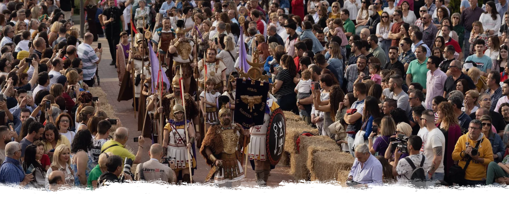

Viaja al pasado y revive una historia ancestral

Bienvenidos a la Web Oficial
Linares viaja cada año a su pasado de la mano de las Fiestas Ibero Romanas de Cástulo, una experiencia de recreación histórica celebrada durante el mes de mayo, organizada por la Concejalía de Turismo del Excmo. Ayuntamiento de Linares.
Las Fiestas de Cástulo son un evento turístico-cultural que pretende recrear el pasado de la Ciudad Íbero-Romana de Cástulo, así como todos los rituales, costumbres, gastronomía y tradiciones que rodeaban aquella época.
Una amplia programación y multitud de actividades sumergen a la ciudad de Linares y al Arqueológico de Cástulo en el Mundo Antiguo y en su pasado íbero-romano. Recreaciones de un circo romano, campamentos, talleres, desfiles, tácticas de combate, gastronomía, ponencias, visitas guiadas y luchas de gladiadores serán la seña de identidad de este evento.
Todo ello, realizado con ayuda de profesionales y recreadores históricos de toda España, así como de la propia población de Linares, que cada edición se siente más unida e involucrada a la celebración de estas Fiestas en la ciudad.
La fidelidad de la recreación y el crecimiento que ha experimentado en sus últimas ediciones ha supuesto que las Fiestas Ibero-Romanas de Cástulo sea la primera fiesta de recreación histórica de Andalucía en formar parte de la Asociación Española de Fiestas y Recreaciones Históricas (AEFRH).
C/ Iglesia, 5 - 23700 Linares (Jaén)
(+34) 953 10 01 83


ENLACES DE INTERÉS
Aviso Legal
Política de Privacidad
Política de Cookies